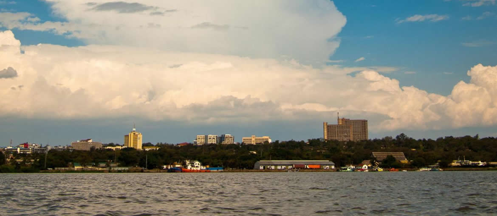

This are the routes that are currently available

Nairobi
Nairobi is the capital and largest city of Kenya, a country located in East Africa. The city has a population of approximately 4.5 million people and is a major economic and cultural center in the region. Nairobi is known for its bustling markets, lively nightlife, and rich history, as well as its proximity to natural attractions like Nairobi National Park and the Maasai Mara game reserve. The city is also home to many international organizations and institutions, including the United Nations Environment Programme (UNEP) and the International Criminal Court (ICC).

Mombasa
Mombasa is a coastal city located in southeastern Kenya, on the Indian Ocean. It is the second-largest city in the country after Nairobi and has a population of approximately 1.2 million people. Mombasa is an important economic hub and port city, serving as the gateway to East Africa for international trade. The city has a rich history, having been a major center of trade and commerce for centuries. It was ruled by the Portuguese, the Arabs, and the British at different times in history, and this has influenced its culture and architecture. Mombasa is also a popular tourist destination, with its beautiful beaches, historic sites, and diverse marine life attracting visitors from around the world.

Kisumu
Kisumu is a port city located in western Kenya, on the eastern shore of Lake Victoria, which is the largest freshwater lake in Africa and the second-largest freshwater lake in the world. With a population of approximately 500,000 people, Kisumu is the third-largest city in Kenya. The city serves as a major commercial and transportation hub, connecting Kenya with other countries in East Africa. Kisumu is also known for its rich cultural heritage and history, having been a center of trade and commerce for centuries. The city is home to several museums and cultural institutions, including the Kisumu Museum, which showcases the region's history and culture. The lakefront area of Kisumu is a popular destination for tourists, offering beautiful views of Lake Victoria and a range of recreational activities.

Eldoret
Eldoret is a city located in western Kenya, in the Uasin Gishu County. It has a population of approximately 500,000 people and is the fifth-largest city in Kenya. Eldoret is a major center of agriculture, commerce, and education in the region. The city is located in the fertile Rift Valley and is known for its large-scale production of maize, wheat, and other crops. It is also home to several universities and educational institutions, including Moi University and Eldoret Polytechnic. Eldoret is a popular destination for athletes, as it is located at an altitude of over 2,100 meters, making it an ideal location for high-altitude training. The city has produced many world-class long-distance runners, including several Olympic champions.

Busia
Busia is a town located in western Kenya, near the border with Uganda. It is the capital of Busia County and has a population of approximately 64,000 people. Busia is an important commercial center, serving as a gateway to Uganda and other countries in East Africa. The town is located on the busy highway connecting Nairobi to Kampala, the capital of Uganda, and is a major transportation hub for goods and people. Busia is also known for its vibrant markets, where a wide variety of goods are sold, including fresh produce, clothing, and electronics. The town is situated on the shores of Lake Victoria and is home to several beaches and other recreational areas.